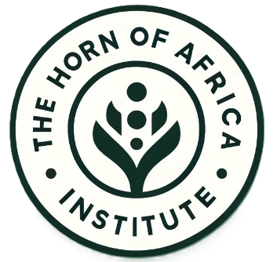

Conflict dynamics
Drivers of violence, armed-group behavior, political exclusion, escalation pathways, and changes in the location, intensity, and organization of violence.

Horn of Africa InstituteResearch program
Independent analysis of the institutions, political settlements, security practices, and regional relationships that shape peace and conflict.
Conflict in the Horn of Africa emerges through interactions among political institutions, armed actors, economic conditions, social divisions, and environmental pressures. Durable stability requires legitimate institutions, credible political arrangements, accountable security practices, and the capacity to manage disputes before they escalate.
The program studies conflict at local, national, and regional levels. It examines armed actors, state institutions, civilian experiences, external interventions, and the spread of conflict and insecurity across borders. Research seeks to identify the institutions, incentives, and practices that sustain insecurity and the policy choices that can reduce it.
Drivers of violence, armed-group behavior, political exclusion, escalation pathways, and changes in the location, intensity, and organization of violence.
Military effectiveness, civilian oversight, force employment, organizational adaptation, police reform, and institutional legitimacy.
Mediation, negotiation, inclusion, local peace infrastructures, implementation, and the durability of political agreements.
Civilian security, displacement, human security, early warning, and institutional responsibility for preventing harm.
Cross-border threats, alliances, external powers, maritime security, regional organizations, and security cooperation.
Risk monitoring, stabilization, reintegration, institutional recovery, and policies that reduce renewed violence.
The program develops conflict assessments, security-sector analysis, early-warning frameworks, institutional diagnostics, scenario exercises, and policy options. Foresight Lab supports this work through data analysis, geospatial methods, machine learning, simulation, and systematic assessment of emerging risks.
Key questions